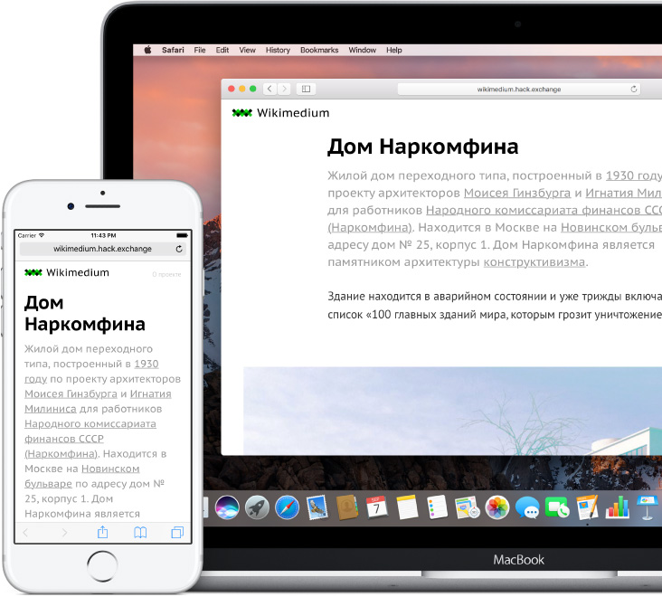
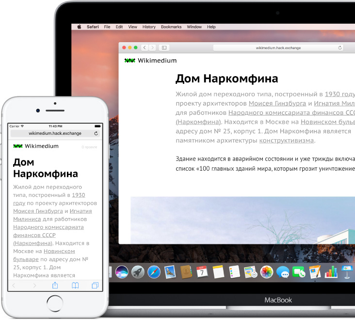
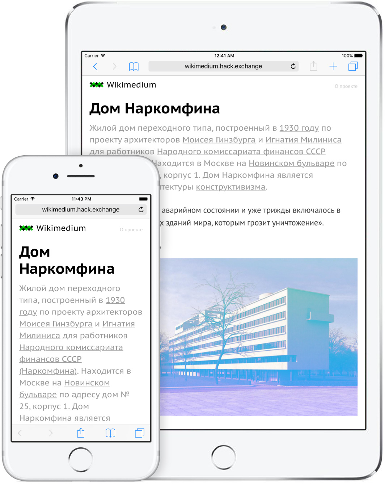

Наглядный пример,
чтобы учиться веб-вёрстке.
Проект, разработанный командой Hæd Exchange, для обучения основам веб-вёрстки в рамках образовательного проекта Hack Exchange.
 

С нуля до первого сайта под компьютеры, смартфоны и планшеты.
Чтобы начать изучать веб-вёрстку на этом проекте не требуется каких-то специальных знаний, кроме базового умения пользоваться компьютером.

Реальный проект, реальный рабочий процесс.
Обучение приближено к работе в реальной жизни. Работа разбита на этапы от типографики, создания меню и использования эффектов, до адаптации под мобильные устройства и использования скриптов.

Возможность самостоятельного и курируемого обучения.
Вы можете обучаться самостоятельно по исходному коду проекта, выложенному на GitHub, или записаться на курс “Основы веб-вёрстки с Захаром Днём” на Hack Exchange.